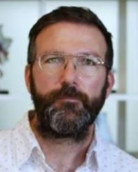
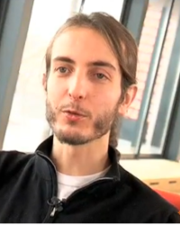
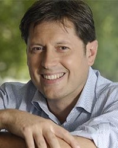
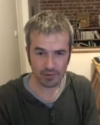

Equipes et Teams
d'Ankama
Avec ses 100 millions de comptes créés et ses 5 millions de joueurs actifs, Ankama regroupent de multitudes de filières avec différentes personnes derrière chacune d'entre elles.
Anthony Roux, également connu sous le pseudonyme Tot est né le 9 mars 1977 à Montreuil. Graphiste de formation, il fait la connaissance de Camille Chafer et d’Emmanuel Darras au sein de l'entreprise de communication I-Puzzle à Lille. Ils fondent ensemble par la suite en 2001 la société Ankama. Etant fan de jeux vidéo et de jeux de rôles, il est le chef de projet Duel, première version de DOFUS, un jeu qui n'était pas prévu pour être massivement multijoueur au départ, il pose les bases de ce qui va devenir Dofus, le jeu-phare d'Ankama, qui sort en août 2004. Il est en charge de tout l'aspect graphique et s'occupe de ce fait largement du pôle Ankama Editions, de tout ce qui concerne les publications et les adaptations pour la télévision et est à l'origine du Monde des Douze et de la majorité des histoires du Krosmoz.
Camille Chafer, dit Kam, né le 17 mai 1978 en France, est un concepteur de jeux vidéo. Diplômé de l’ENIC Telecom, il travaille aux côtés de ses deux futurs collaborateurs, Emmanuel Darras et Anthony Roux dans une entreprise de communication. Il est l'un des trois cofondateurs de la société multimédia Ankama. Il occupe actuellement le poste de directeur technique et participe principalement au développement et à la gestion des projets de jeux-vidéo de l'entreprise dont il dirige l'équipe de programmation. Il s'occupe plus spécifiquement des serveurs.
Emmanuel Darras né le 8 octobre 1976, parfois désigné sous le pseudonyme de Manu est l’un des trois cofondateurs de la société Ankama. Diplômé de l'ENIC Telecom, il rencontre ces deux futurs collaborateurs Camille Chafer et Anthony Roux dans une agence de création Internet où ils travaillent tous trois. Il fondera avec eux Ankama en 2001. Il a longtemps occupé le poste de directeur commercial et financier, se consacrant principalement à la recherche de financements et à la croissance du groupe et de ses diverses filiales. Il quitte néanmoins le groupe Ankama le 25 janvier 2013 et revend l'essentiel de ses parts dans la société mais reste néanmoins associé minoritaire du groupe.

Olivier Comte né en 1973 est un entrepreneur francais, il rejoint Ankama et est nommé directeur général de l'entreprise en 2013 après le départ d'Emmanuel Darras. Il va notamment soutenir la prochaine étape du développement d’Ankama à l’international. Le programme d’Olivier Comte consiste à « entrer dans une nouvelle phase de développement international, d’accélérer la croissance des activités et optimiser le potentiel des franchises ».
Né proche de Lille en 1976, Xavier Houssin est depuis son plus jeune âge obsédé par les jeux vidéo et l'animation japonaise. Après avoir achevé ses études techniques et un BTS en Conception de produits industriels, il décide de s'orienter vers une formation en infographie plus en adéquation avec sa passion. Après deux ans au sein de la startup lilloise, il rejoint Ankama où il commence à travailler en tant que Character Designer et background artist sur le jeu DOFUS. Durant ses 15 années chez Ankama, il a travaillé sur le design des personnages de la série d'animation et du jeu vidéo WAKFU, du film d'animation DOFUS et du jeu sur tablette Krosmaga.
Le groupe Ankama emploie actuellement près de 450 employés en France et dans ses différents bureaux à travers le monde.